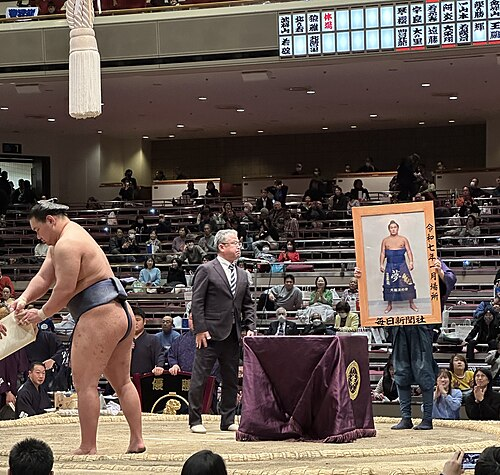
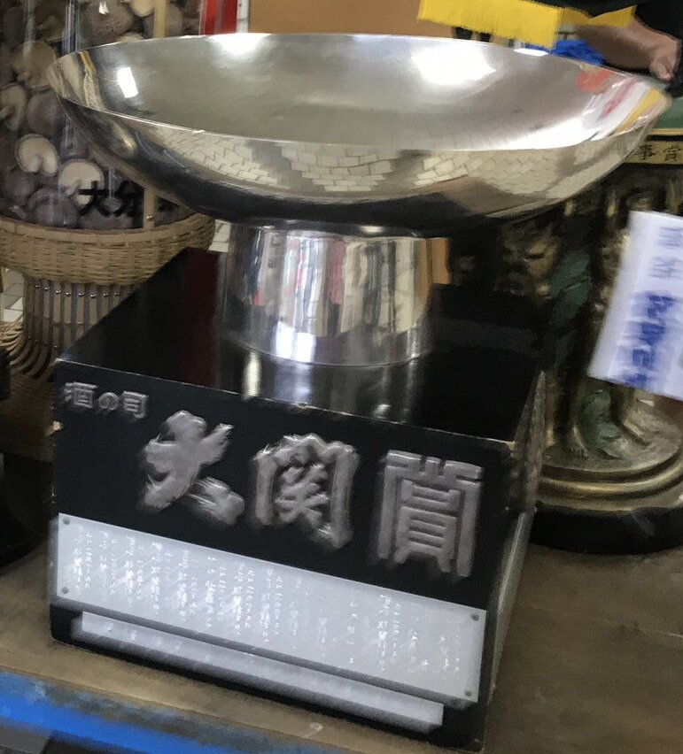

These are the press and businesses trophies given out to the wrestler who wins the yusho (championship) in the top division:
- Oita's Shiitake Agricultural Cooperative Award
- NHK Gold Cup
- Championship portrait
- Ozeki award
Tokyo Specific Press and Businesses Trophies
- Tokyo Shimbun award
- Kokubun Metropolitan Cup
Osaka Specific Press and Businesses Trophies
- Yoshimoto Kogyo Award
- Tozai-kai Championship Flag
- Japan Mint President's Cup
Nagoya Specific Press and Businesses Trophies
- Chunichi Shimbun Award
- CBC TV Award
- TTB TV Award
- Mikawa Beef Welfare Council Award
Fukuoka Specific Press and Businesses Trophies
- RKB Mainichi Broadcasting Award
- Yamecha Tea Promotion Association Award (and green box)

